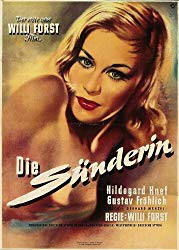

IMDB-Wertung: 6.8 / 10
IMDB-Wertung: 6.8 / 10  Metascore:
Metascore: 
Marina, a prostitute, lives with the unsuccessful artist Alexander. He suffers from a brain tumor that threatens to make him blind. In order to finance an operation Marina takes up her old profession.
 IMDB-Wertung: 6.8 / 10 Metascore:
Marina, a prostitute, lives with the unsuccessful artist Alexander. He suffers from a brain tumor that threatens to make him blind. In order to finance an operation Marina takes up her old profession.
Jahr: 1951
Dauer: 87 Minuten
FSK: 12
Land: West-Deutschland Studio: Donau-FilmgesellschaftTonspuren:
Untertitel:
Auflösung: 1080p (1440x1080) Größe: 6717 MB
Genre: Drama
Regisseur: Willi Forst
Drehbuch: Willi Forst, Georg Marischka, Gerhard Menzel
Soundtrack: Theo Mackeben
Darsteller:
 Hildegard Knef als Marina
Hildegard Knef als MarinaDatei: X:\1950-1959\Sünderin, Die (1951, FSK12, 1440x1080).mkv seit 08.03.2019
Festplatte: Gemischt-01+Anime
 Es gibt insgesamt 141 Filme in der Gruppe '1950-1959'
Es gibt insgesamt 141 Filme in der Gruppe '1950-1959'